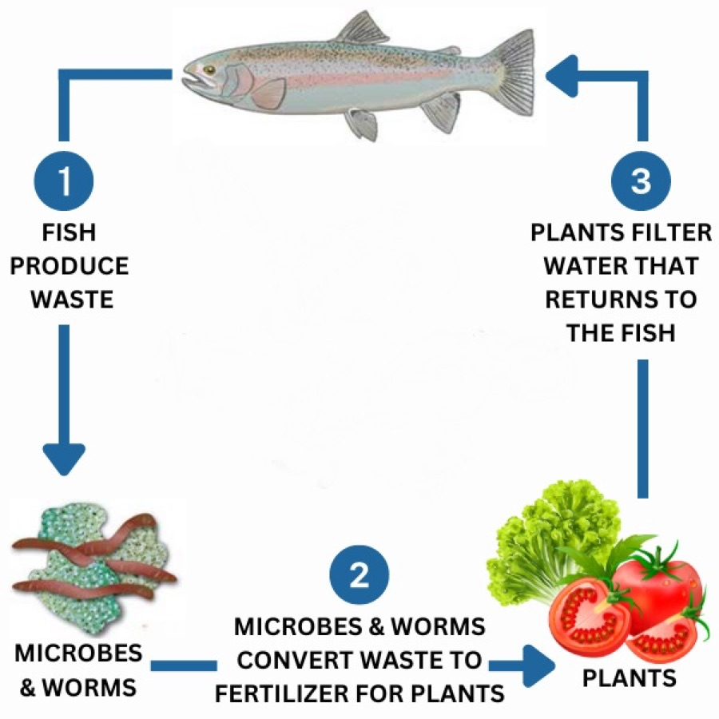
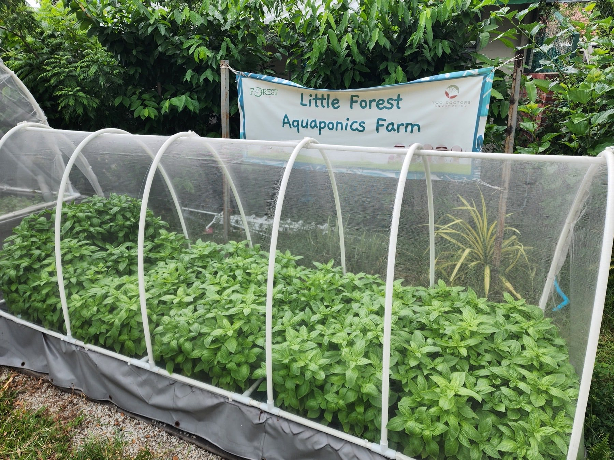
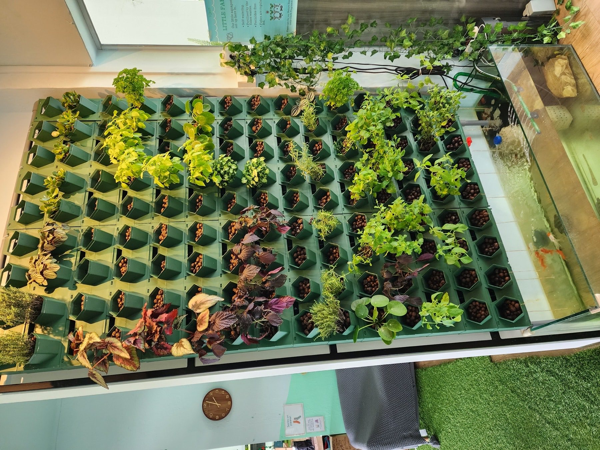

For Schools & Families
Enrichment Courses
Curriculum-aligned, hands-on workshops where kids and adults learn aquaponics, vermicomposting and soil farming by actually building and tending mini-systems.
Explore courses →From school enrichment courses and guided farm tours to immersive farm experiences and made-to-order home growing systems — Two Doctors Aquaponics brings sustainable farming to life. Founded by two doctors on a mission for healthier living.
Both grow plants without soil, but that's where the similarity ends. Hydroponics feeds plants with man-made liquid nutrient solutions that need to be mixed, dosed and replaced by hand. Aquaponics goes a step further: fish in a tank produce waste, naturally occurring bacteria (and worms, in our systems) convert that waste into plant fertiliser, and the plants filter and clean the water before it's pumped back to the fish — a living, closed-loop ecosystem that runs on biology instead of bottled chemicals.
Their waste is the entire nutrient source — no nutrient solutions to buy, mix or dispose of.
Plants clean the water for the fish, the fish feed the plants — each part of the system supports the other, with far less waste than hydroponics or traditional farming.

Whether you're planning a school excursion, a weekend outing, or dreaming of fresh greens at home — there's a TDA experience designed for you. Tap any card to learn more, or message us directly to start planning.
Curriculum-aligned, hands-on workshops where kids and adults learn aquaponics, vermicomposting and soil farming by actually building and tending mini-systems.
Explore courses →
Walk through our working farms and see closed-loop fish-and-plant systems up close, with stories from the doctors who designed and built them.
Book a tour →
Roll up your sleeves for half-day or full-day experiences — feeding fish, harvesting greens, planting seedlings, and tasting farm-to-table produce.
See experiences →
From compact AquaFrame units to full home or office installations — we design and build aquaponics systems tailored to your space and goals.
Design yours →Dr. Lim Jia Yang has been refining micro-farming and aquaponics solutions for Singapore homes since 2015. Dr. Wang Fei Fan, an ENT specialist, champions the idea that "wellness extends beyond physical health to include mental well-being." Together, they built Two Doctors Aquaponics on a simple belief: growing your own food — even a little of it — grows healthier, happier lives.
Fish and plants work together in a self-sustaining cycle — no synthetic fertilisers, no waste.
Every course, tour and build is designed around one goal: helping people live healthier, more connected lives.

A glimpse of the farms, courses and builds you'll experience with TDA — from rooftop NFT systems to vertical aesthetic walls and hands-on harvest days.



Tell us what you're after — a course, a tour, an experience day, or a custom home setup.
We recommend the right programme or design based on your group size, age range, space or budget.
Pick a date and we lock in your booking — schools, families, companies and individuals all welcome.
Show up, get your hands dirty (in a good way!), and leave with new skills — or a thriving system at home.
"Our students were completely engaged for the whole session — they're still talking about feeding the fish weeks later! A wonderfully run enrichment programme."
"The farm tour was so much more than we expected — informative, hands-on, and the kids got to harvest their own greens to bring home."
"They designed and built our home AquaFrame system to fit a tiny balcony perfectly. A year on, it's still thriving — and so are we!"
Whether it's booking a class excursion, planning a weekend outing, or designing a system for your home — our team replies fastest on WhatsApp.
Aquaponics is a closed-loop way of growing food that combines fish farming (aquaculture) with soil-less plant growing (hydroponics). Fish produce waste, naturally occurring bacteria and worms convert that waste into nutrients, and the plants absorb those nutrients while filtering and cleaning the water — which is then pumped back to the fish. Hydroponics on its own still relies on man-made liquid nutrient solutions; aquaponics replaces those bottled chemicals with a living ecosystem, so nothing goes to waste. See the full breakdown above ↑.
The fastest way is to message us directly on WhatsApp at +65 9299 6898 — just tap any "WhatsApp Us" button on this site. Let us know your preferred dates, group size and what you're interested in, and we'll help you plan from there.
Yes — our enrichment courses and farm experiences are designed to be hands-on and age-appropriate for both children and adults, including school groups, families and corporate teams.
Absolutely. Build-to-order is one of our core offerings — from compact AquaFrame units for small spaces to full custom installations. Share your space, goals and budget on WhatsApp and we'll propose a design.
Our base is at 2 Kallang Avenue #03-08, Singapore 339407, and we also manage and showcase several partner farm installations across Singapore. We'll confirm the exact tour or pick-up location when you book.
Yes — sustainable supplies such as K1 filter media, compost worms, vermicompost, pipes, seeds and seedlings are available via our Shopee store, linked in the footer of every page.